OTIUM — это практика осмысленного досуга. В античной традиции otium означало не отдых от труда, а время, в котором человек возвращается к взгляду, памяти и мышлению.
Мы создаём маршруты не для «посещения», а для пребывания — для внимательного присутствия в архитектуре и памяти места.
OTIUM существует для тех, кто хочет смотреть медленно.
От античных форумов Рима и мозаик Равенны до стеклянных башен Милана и Рима XXI века итальянская архитектура задаёт европейские ориентиры на каждом витке истории.
Римская Империя оставила арки, амфитеатры и инженерию бетона; раннехристианские базилики и византийские мотивы подготовили средневековье. Романские аббатства и итальянская готика с её полихромным мрамором сменились Возрождением Флоренции и Рима — от Брунеллески до Браманте и Микеланджело.
Барокко Бернини и Борромини, сицилийское барокко после 1693 года и неоклассика эпохи Наполеона сформировали облик городов. Стили Либерти, рационализм и архитектура фашистской эпохи отразили модерн и политику XX века; послевоенный модернизм, брутализм и постмодернизм Tendenza подготовили современную сцену музеев и городских вмешательств.
Путеводитель выстроен по хронологическим главам: в каждой — знаковые памятники с кратким контекстом и именами мастеров.
1. Этрусское и древнеримское зодчество (VIII в. до н.э. — V в. н.э.)
Адрес: Lungotevere Castello | Стиль: Этрусское и древнеримское зодчество (VIII в. до н.э. — V в. н.э.)
Построенный императором Адрианом около 139 года н.э. как место его погребения, это сооружение стало военной крепостью в Средние века. Впоследствии оно использовалось как тюрьма и замок папами, включая папу Николая V, который добавил оборонительные стены и башни. В 1527 году оно сыграло ключевую роль в защите Рима от атак войск Карла V. Обязательное место для посещения благодаря своей исторической значимости и потрясающим видам на реку Тибр и Ватикан.
Адрес: Рим | Стиль: Этрусское и древнеримское зодчество (VIII в. до н.э. — V в. н.э.) | Период: 70–80 н.э.
Амфитеатр Флавиев — крупнейшая арена Римской империи. Вместимость достигала примерно пятидесяти тысяч зрителей; под ареной — лабиринт служебных помещений. Символ римской инженерии и общественных зрелищ. Образец римского бетона, сводов и организации массовых зрелищ.
Адрес: Рим | Стиль: Этрусское и древнеримское зодчество (VIII в. до н.э. — V в. н.э.) | Период: ок. 125 н.э.
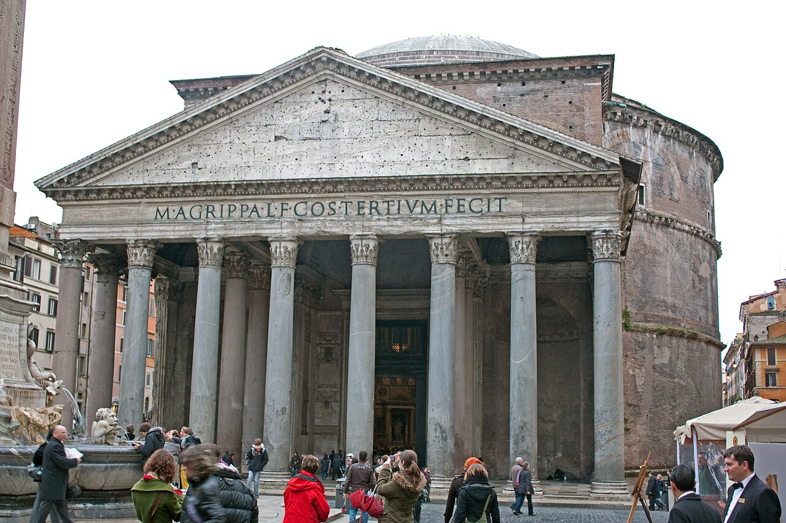
Храм с крупнейшим несущим куполом античности. Купол из бетона с отверстием окулуса освещает зал диаметром сорок три метра. Образец римского бетона и центрической композиции. Древнейший сохранившийся крупный свод мира; образец римской инженерии.
Адрес: Historic centre | Стиль: Этрусское и древнеримское зодчество (VIII в. до н.э. — V в. н.э.)
Площадь Навона была построена на руинах стадиона императора Домициана и служила цирком, где в древнеримские времена проводились гонки на колесницах. Название «Навона» происходит от латинского слова «quadrana nova», что означает «новая площадь». Со временем площадь стала центром религиозных фестивалей, политических собраний и общественной жизни. Обязательное к посещению место благодаря своей потрясающей барочной архитектуре, живописным фонтанам и очаровательной атмосфере, площадь Навона предлагает посетителям возможность увидеть как древний, так и современный Рим.
Адрес: Between Colosseum and Capitoline Hill | Стиль: Этрусское и древнеримское зодчество (VIII в. до н.э. — V в. н.э.)
Когда-то политический, религиозный и коммерческий центр Римской империи, Римский форум стал сценой ключевых моментов римской цивилизации, включая речи известных ораторов, таких как Цицерон и Юлий Цезарь. Здесь находились храмы, рынки и правительственные здания, он служил центром гражданской жизни до своего упадка после падения империи. Посетите Римский форум, чтобы ощутить колыбель западной демократии и основополагающие начала римского права и культуры.
Адрес: Piazza Santa Croce | Стиль: Раннехристианское и византийское (IV–VIII вв.) | Период: 1294–1442
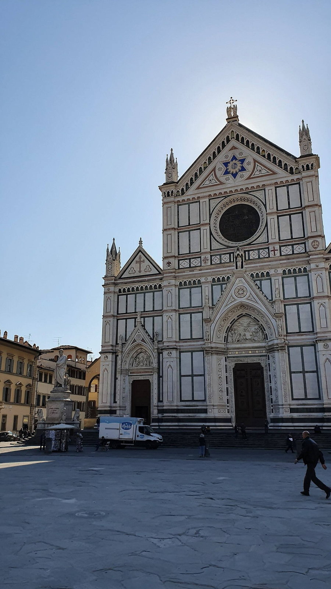
Построенная между 1294 и 1442 годами, базилика была заказана францисканцами как место захоронения видных флорентийских семей и выдающихся личностей, таких как Микеланджело, Макиавелли и Галилео. Она стала символом религиозного благочестия и гражданской гордости во времена Возрождения Посетители приходят сюда, чтобы полюбоваться его архитектурным великолепием и отдать дань памяти выдающимся личностям, похороненным в его стенах.
Адрес: Piazza San Marco, Venice (San Marco sestiere) | Стиль: Раннехристианское и византийское (IV–VIII вв.)
Площадь Сан-Марко возникла в IX веке как небольшая передняя площадь базилики Святого Марка. Со временем она расширялась вместе с ростом могущества Венецианской республики и развитием религиозного культа мощей святого Марка. Площадь стала местом проведения важнейших государственных церемоний и религиозных праздников, символом величия города и важнейшим пространством городской жизни Это лучшее место в Венеции, чтобы почувствовать дух республики, паломничества и театральности городской культуры.
Адрес: rome | Стиль: Раннехристианское и византийское (IV–VIII вв.)
Построенная между 432 и 439 годами нашей эры папой Сикстом III, базилика Святой Марии Маджоре изначально была возведена в честь явления Девы Марии святой Елене. На протяжении веков она многократно расширялась и восстанавливалась, включая значительные ремонты при папе Павле V в 17 веке. Базилика остается ключевым местом в римско-католической литургии и искусстве, храня важные религиозные реликвии и произведения искусства. Обязательное место для посещения из-за его исторической значимости, архитектурной красоты и духовной важности.
Адрес: Piazza di San Giovanni in Laterano | Стиль: Раннехристианское и византийское (IV–VIII вв.)
Император Константин пожертвовал участок; нынешняя базилика восходит к основанию IV века и неоднократно перестраивалась. Борромини обновил интерьер; монументальный белый фасад спроектировал Алессандро Галилеи в 1730-е годы. Главная церковь Рима и всех храмов мира; паломники часто начинают маршрут отсюда.
Адрес: Piazza di Santa Maria in Trastevere | Стиль: Раннехристианское и византийское (IV–VIII вв.)
Построенная около 349 года нашей эры папой Маркеллином, Санта-Мария в Трастевере изначально была посвящена Святому Стефану. На протяжении веков она претерпела несколько ремонтов и расширений, особенно в период Ренессанса, когда были добавлены её потрясающие мозаики. Церковь также служила убежищем для ранних христиан во время преследований. Посещение Санта-Марии в Трастевере дает возможность заглянуть в римскую историю и религиозное наследие, демонстрируя некоторые из самых изысканных произведений искусства средневековья и Ренессанса в Риме.
Адрес: Флоренция | Стиль: Романский стиль (XI–XII вв.)
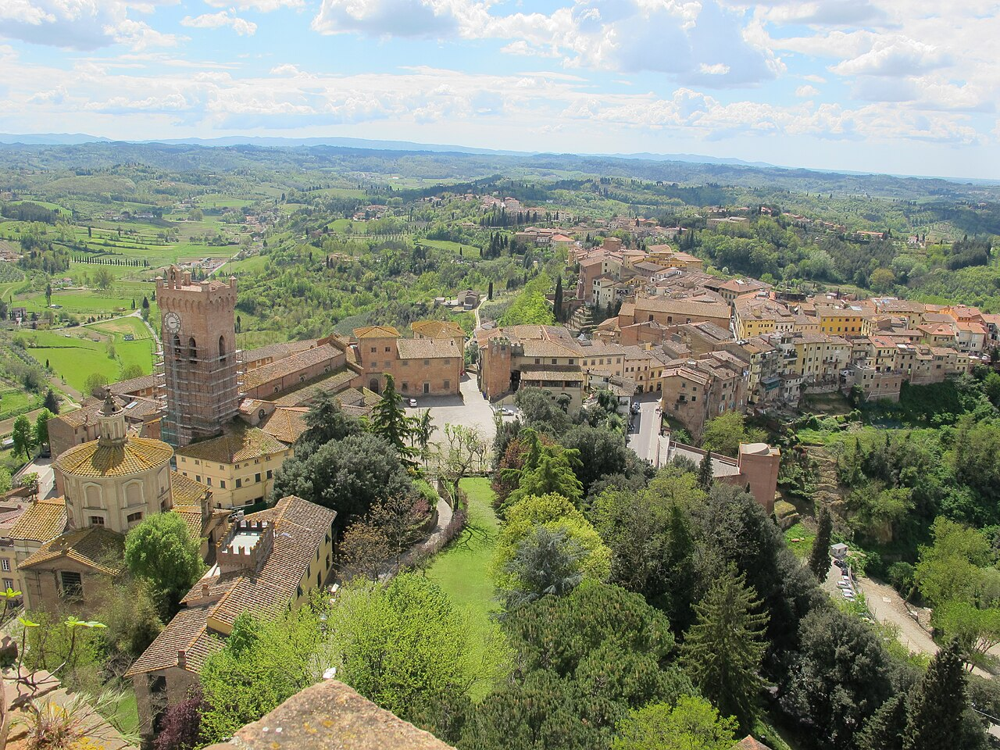
Романская базилика на холме с фасадом из белого и зелёного мрамора. Фасад с мозаикой Христа и зелёно-белым мрамором возвышается над Арно. Один из лучших сохранившихся романских храмов Тосканы. Высокий романский интерьер с византийскими настенными мозаиками.
Адрес: Милан | Стиль: Романский стиль (XI–XII вв.)
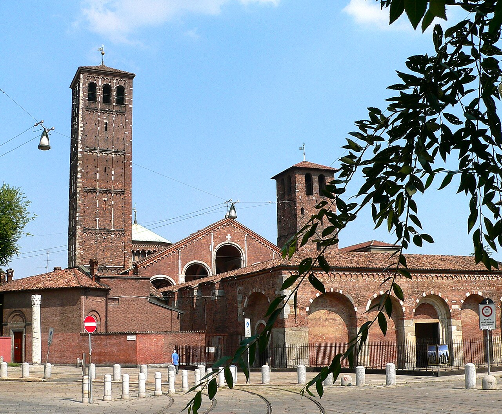
Базилика с атриумом и кирпичными романскими объёмами. Атрий с античными колоннами ведёт к залу с мозаиками и деревянным потолком. Ключевой памятник миланского романского зодчества. Главный храм Милана и образец ломбардского романского стиля.
Романский собор с скульптурным декором Виледжмо. Рельефы Вилджельмо на портале рассказывают библейские сюжеты в камне. Включён в список ЮНЕСКО. Собор Ланфранко и романский шедевр Падании.
Каменный собор с знаменитой наклонной башней-колокольней. Мраморный собор начат в 1063 году на Пьяцца-деи-Мираколи. Образец тосканского романского стиля. Ядро ансамбля с Пизанской башней и баптистерием.
Летний дворец арабско-норманнского стиля. Летняя резиденция с фонтанным залом и арабо-норманнскими декоративными мотивами. Образец исламской планировки во дворцовой архитектуре. Памятник сицилийского двора эпохи Вильгельма II.
Церковь с красными куполами и садом-клуатром. Гипогей с саркофагами норманнских правителей под соборным полом. Арабские купола на норманнском храме. Связь палермитанского собора с королевскими погребениями.
Норманнский собор с золотыми мозаиками. Золотые мозаики в куполе и апсиде покрывают шесть тысяч квадратных метров. Вершина норманно-арабского синтеза на Сицилии. Синтез норманнской, византийской и арабской культуры на Сицилии.
Собор с наложением стилей от романского до неоклассики. Фасад перестраивался; внутри — мозаики и королевские гробницы. История Сицилии в камне. Главный храм норманнской Палермо.
Основан Рожером II с византийскими мозаиками. Византийский Христос Пантократор в апсиде доминирует над нефом. Ранний норманнский храм Сицилии. Норманнский собор на берегу Тирренского моря.
Построенный между 1296 и 1436 годами, собор был спроектирован Арнольфо ди Камбио и позже завершен куполом Филиппо Брунеллески, который остается инженерным чудом. Фасад, украшенный мраморными панелями и статуями, отражает богатство и художественное мастерство города в эпоху Возрождения Флорентийский собор — обязательное место для посещения благодаря своему архитектурному великолепию и историческому значению. Он представляет вершину средневекового мастерства и художественного искусства.
Адрес: Piazza Santa Maria Novella | Стиль: Итальянская готика (XIII–XIV вв.) | Период: 1278–1469
Построенная в конце XIV века, церковь Санта-Мария-Новелла первоначально возводилась доминиканскими монахами. Она служила для них монастырской церковью и стала важным духовным центром для общины. Интерьер украшен изысканными фресками таких художников, как Амброжио Лоренцетти и Андреа Орканья, демонстрирующими художественное мастерство той эпохи Посетители приходят сюда, чтобы полюбоваться его потрясающей архитектурой и оценить богатый исторический контекст, который она представляет.
Адрес: Via Calzaiuoli / Via dell'Arte della Lana | Стиль: Итальянская готика (XIII–XIV вв.) | Период: 1389–1401
Построенный между 1389 и 1401 годами, Орсанмикеле служил как практическим, так и религиозным целям. Изначально он функционировал как зернохранилище для хранения пшеницы и муки, прежде чем быть преобразованным в часовню. Интерьер украшен потрясающими скульптурами от известных художников, таких как Донателло и Андреа Пизано Посетители приезжают сюда, чтобы полюбоваться его уникальным дизайном и художественными сокровищами, включая некоторые из самых знаменитых произведений флорентийской скульптуры.
Адрес: Piazza San Giovanni, facing the cathedral | Стиль: Итальянская готика (XIII–XIV вв.) | Период: 1059–1128
Построенный между 1059 и 1128 годами, Флорентийский крестильный храм (Баптистерий) изначально был спроектирован архитектором Биндо ди Жерардо да Верона. Он украшен тремя порталами с замысловатыми мраморными панелями, изображающими библейские сцены, включая работы Лоренцо Жиберти и Андреа Пизано. Крестильный фонтан в структуре символизирует христианские обряды инициации Посещение флорентийского Крестильного храма позволяет гостям оценить его знаковую средневековую архитектуру и полюбоваться великолепными скульптурами, украшающими его экстерьер.
Возведенная между 1298 и 1334 годами Арнольфо ди Камбио, Торре-д’Арнольфо изначально являлась частью комплекса Палаццо Публико. Она служила дозорной башней, а позже стала колокольней для находящегося поблизости собора. Дизайн башни отражает готические влияния, демонстрируя замысловатую каменную резьбу и изящные арки Поднимитесь на вершину Торре-дарнольфо, чтобы полюбоваться захватывающими панорамами исторического центра Флоренции.
Адрес: S-shaped main waterway through the historic center | Стиль: Итальянская готика (XIII–XIV вв.)
Гранд-канал был построен в эпоху Возрождения и стал важнейшей транспортной артерией Венеции, связывающей разные районы города. Канал играл ключевую роль в торговле и жизни города, став местом встречи купцов и аристократии. Здесь возвышались величественные дворцы, украшенные фасадами в стиле готики, ренессанса и барокко Гранд-канал является главной осью Венеции и важнейшим пространственным элементом города, представляя собой своеобразную плавучую улицу.
Адрес: North side of Piazza San Marco, Mercerie entrance | Стиль: Итальянская готика (XIII–XIV вв.)
Часы на башне Сан-Марко были построены в конце XV века и предназначались для точного регулирования времени торговцев и горожан. Они стали важной частью городской инфраструктуры Венеции, расположенной на пересечении торговых путей. Часовая башня знаменита своими золотыми и синими циферблатами зодиака и фигурами мавров, отбивающими время ударами колокола. Особенностью башни является показ фаз Луны и знаков Зодиака, а также автоматические фигуры, исполняющие мелодии и удары колокола в определённые часы Это выдающийся пример архитектурной гармонии Ренессанса и готики, демонстрирующий значение времени в жизни торговой республики Венеция.
Построенные в начале XVI века для магистратов Флоренции, Уффици изначально предназначались в качестве учреждений (слово «uffizi» означает «кабинеты» или «учреждения»). Со временем они превратились в королевскую резиденцию, а затем в музей, где хранится множество величайших художественных сокровищ Италии Галерея Уффици — обязательное место для посещения всех, кто интересуется искусством Возрождения, поскольку она предлагает беспрецедентные знания о европейской живописи и скульптуре.
Возведенный между 1298 и 1314 годами, палаццо Веккьо изначально служил штаб-квартирой Флорентийской республики. Позднее он был расширен медичи, которые превратили его в свою резиденцию власти. Фасад здания, разработанный Джорджо Вазари, демонстрирует замысловатые детали, вдохновленные классической римской архитектурой Палаццо Веккьо — место, которое обязательно к посещению благодаря своему историческому значению и архитектурному величию. Оно предлагает захватывающие виды на центр города и хранит важные произведения искусства таких художников, как Микеланджело и Боттичелли.
Адрес: Piazza San Lorenzo | Стиль: Раннее Возрождение (XV в.) | Период: 1421–1442
Возведённая между 1421 и 1442 годами Филиппо Брунеллески, базилика была заказана Козимо Медичи как место погребения для его семьи. Она демонстрирует раннюю архитектуру Возрождения, сочетая готические элементы с классическими влияниями. Интерьер украшен замысловатыми мраморными декорациями и гробницами, спроектированными Микеланджело, включая гробницы Папы Льва X и Джулиано Медичи Посещение базилики Сан-Лоренцо позволяет посетителям ознакомиться с сплавом искусства, архитектуры и флорентийской истории, в особенности с вкладом династии Медичи.
Изначально дворец был построен для Лука Питти, богатого флорентийского банкира, и задумывался как соперник близлежащего Дворца герцога. Однако после того, как он был куплен Козимо I Медичи, он прошел масштабную реконструкцию под руководством архитекторов, таких как Вазари и Бернардо Буонталенти. Семья Медичи использовала его в качестве официальной резиденции до 1743 года, когда Великий герцог Джан Гастоне переехал в другое место Сегодня палаццо Питти вмещает несколько музеев, включая Галерею Палатина, которая демонстрирует шедевры таких художников, как Рафаэль, Тициан и Караваджио, что делает это место обязательным для посещения любителями искусства, приехавшими во Флоренцию.
Адрес: Behind Palazzo Pitti, entrance Via Romana / Pitti | Стиль: Раннее Возрождение (XV в.)
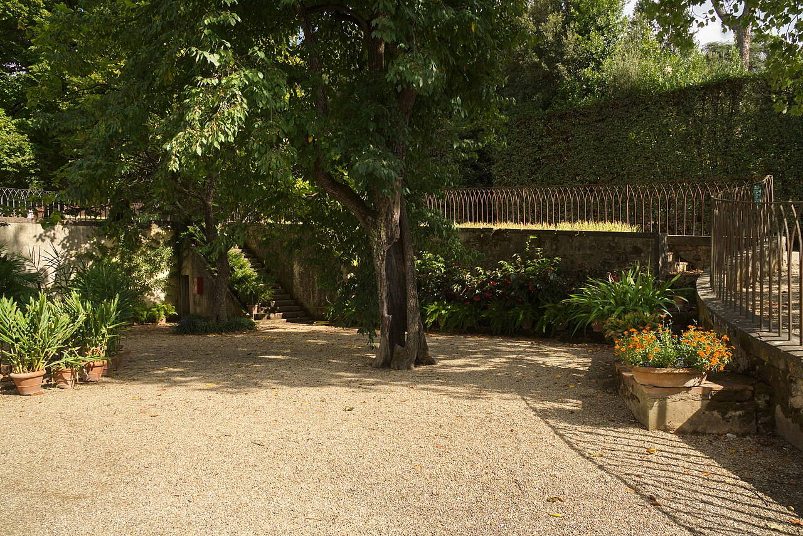
Построенные в конце XVI века Великим Герцогом Франческо I де Медичи, эти роскошные сады были вдохновлены принципами итальянского Возрождения. Они спроектированы известными архитекторами Никколо Триболо и Амманати и включают замысловатые фонтаны, скульптуры и дорожки, отражающие элегантность и роскошь эпохи Медичи Боболи — обязательное место для посещения каждому, кто ищет умиротворения среди суеты флорентийских улиц. Здесь можно ознакомиться с флорентийской историей, наслаждаясь потрясающими пейзажами и произведениями искусства.
Основанная в 1784 году как часть Академии изящных искусств Великого герцога Леопольдо, галерея представляет шедевры, собранные на протяжении веков. Самая известная экспозиция — мраморная скульптура «Давид» Микеланджело, которая стала одной из символических достопримечательностей города Посещение Галереи Академии позволяет посетителям оценить художественное наследие итальянского Возрождения и полюбоваться одной из величайших скульптур в истории.
Палац, заказанный Франческо ди Лоренцо Строцци около 1489 года, был спроектирован архитектором Микелоццо ди Бартоломео. Он служил одновременно резиденцией для семьи Строцци, а позже стал местом для проведения культурных собраний и выставок. Фасад здания украшен элегантными лоджиями и изысканными скульптурными деталями, что отражает художественное изящество своей эпохи Посещение Палаццо Строцци дает представление о флорентийской истории и искусстве, демонстрируя, как богатство и власть выражались через архитектурный великолепие.
Адрес: Between Palazzo Vecchio, Loggia, and Uffizi horn | Стиль: Раннее Возрождение (XV в.)
Основанная в период позднего Средневековья, площадь Синьории (Piazza della Signoria) служила центром флорентийского управления и правосудия. Именно здесь разворачивались важные исторические события, включая знаменитый суд над Савонаролой в 1498 году. На площади также находятся одни из самых известных скульптур, в частности «Давид» Микеланджело в прилегающей Лоджии Ланци (Loggia del Lanzi) Посетите площадь Синьории, чтобы погрузиться в яркую историю города и полюбоваться его замечательными произведениями искусства.
Вилла Фарнезина на Тибре — элегантная резиденция раннего XVI века с фресками высокого класса. Около 1510 года Agostino Chigi поручил постройку Baldassare Peruzzi; Raphael, Sebastiano del Piombo и Sodoma расписали залы мифологическими сюжетами. Вилла сохранила гармонию архитектуры и живописи эпохи Высокого Возрождения.
Адрес: Piazza del Quirinale | Стиль: Раннее Возрождение (XV в.)
Квиринальский дворец на одноимённом холме — официальная резиденция президента Италии. Папы Римские расширяли дворец с 1583 года; после объединения Италии здесь жили короли, а с 1946 года — президенты. Государственные залы и сады открываются для экскурсий в отдельные дни. Смена караула у дворца — популярное представление; ансамбль отражает четыре столетия придворной жизни.
Адрес: Рим | Стиль: Высокое Возрождение (начало XVI в.) | Период: 1518
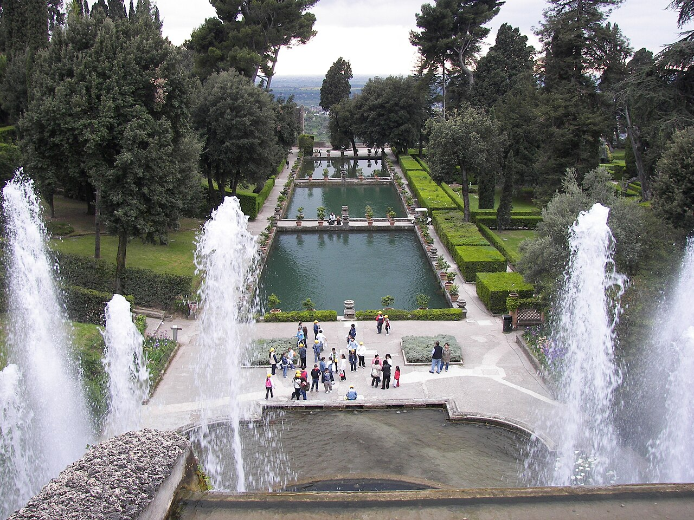
Вилла Рафаэля с лоджией. Лоджия Рафаэля сохраняет фрески и росписи. Высокое Возрождение в загородной архитектуре. Загородная вилла у Тибра для папских банкетов.
Базилика Палладио на острове. Белый мраморный фасад отражается в водах бассейна. Классический фасад на воде. Классический храм Палладио, видимый с Сан-Марко.
Церковь с фасадами Кодуччи. Фасады Кодуччи обращены к каналу и площади. Венецианское Возрождение. Редкий пример венецианской центрической церкви эпохи Высокого Возрождения.
Адрес: Рим | Стиль: Высокое Возрождение (начало XVI в.) | Период: 1506–1626
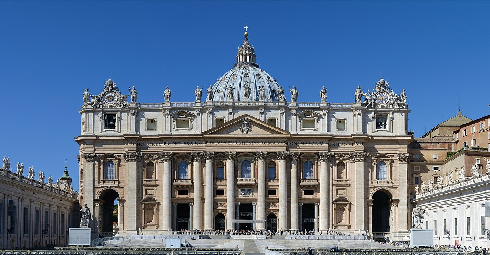
Собор Святого Петра в Ватикане — главный храм католической Церкви и один из крупнейших церквей мира. Строительство началось в 1506 году по проекту Донато Браманте; позже над куполом и планом работали Рафаэль, Антонио да Сангалло Младший, Микеланджело, Джакомо делла Порта и Карло Мaderно. Фасад завершён в 1614 году, внутреннее убранство и площадь перед собором оформлялись до 1626 года. Купол Микеланджело задаёт силуэт Рима; собор символизирует триумф контрреформации и папского Рима.
Первый крытый театр эпохи Возрождения Палладио. Сцена с перспективными улицами — последний проект Андреа Палладио. Влияние на театральную архитектуру Европы. Старейший крытый театр эпохи Возрождения.
Адрес: Рим | Стиль: Высокое Возрождение (начало XVI в.) | Период: 1502
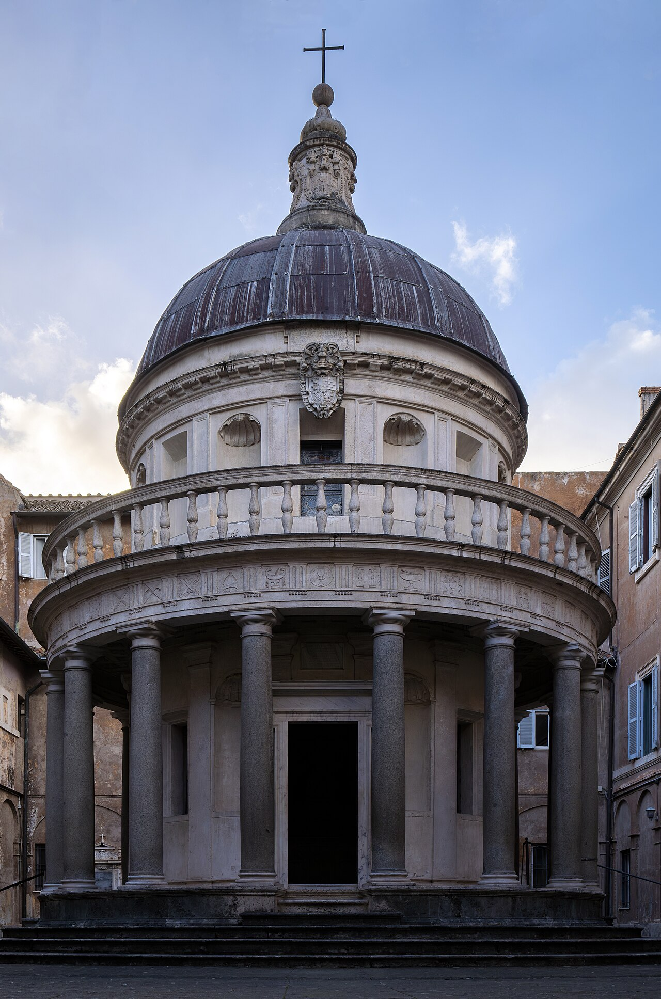
Круглая капелла Браманте во дворе Сан-Пьетро-ин-Монторио. Круглый периптер на Яникуле отмечает место, связанное с апостолом Петром. Эталон высокого Возрождения. Эталон центрического храма Высокого Возрождения.
Сад с каскадными фонтанами Виньола. Каскадные фонтаны спускаются террасами к партеру. Маньеристский садовый дизайн. Образцовый маньеристский сад XVI века.
Фрески Микеланджело позднего периода. Купол и стены расписал поздний Микеланджело. Маньеристская живопись и пространство. Ключевой памятник римского маньеризма.
Двойная спиральная лестница Саньо. Две винтовые лестницы не пересекаются внутри ствола. Инженерная смелость маньеризма. Инженерный шедевр Антонио да Сангалло Младшего.
Дворец Палладио с маньеристскими мотивами. Заказчики — семья Тьене; позже дворец достраивал Винченцо Скамоцци. Синтез ордеров и декора. Переход от готического объёма к классическим пропорциям Палладио.
Фасад Альберти — переход к маньеризму. Мраморный фасад Альберти завершён в 1470 году. Теоретическая архитектура Возрождения. Теоретический мост от Возрождения к маньеризму.
9. Палладианство и венецианское Возрождение (XVI в.)
Адрес: Piazza San Marco, adjacent to the lagoon | Стиль: Палладианство и венецианское Возрождение (XVI в.)
Дворец дожей был построен в XIV–XVI веках и стал символом могущества Венецианской республики. Это величественное здание служило резиденцией дожа и центром управления обширной морской империей. После многочисленных пожаров и политических реформ дворец неоднократно перестраивался и расширялся, превращаясь в сложную систему помещений, предназначенных для государственного управления, тайных заседаний и публичных церемоний. Одним из самых впечатляющих элементов дворца является Сала делла Маггьор Консильо — одна из крупнейших зал дворцов Европы Посещение Дворца дожей позволяет окунуться в атмосферу средневековой Венецианской республики и увидеть архитектурное воплощение её власти и влияния.
Адрес: Linking the Doge's Palace to the former prisons | Стиль: Палладианство и венецианское Возрождение (XVI в.) | Период: 1602
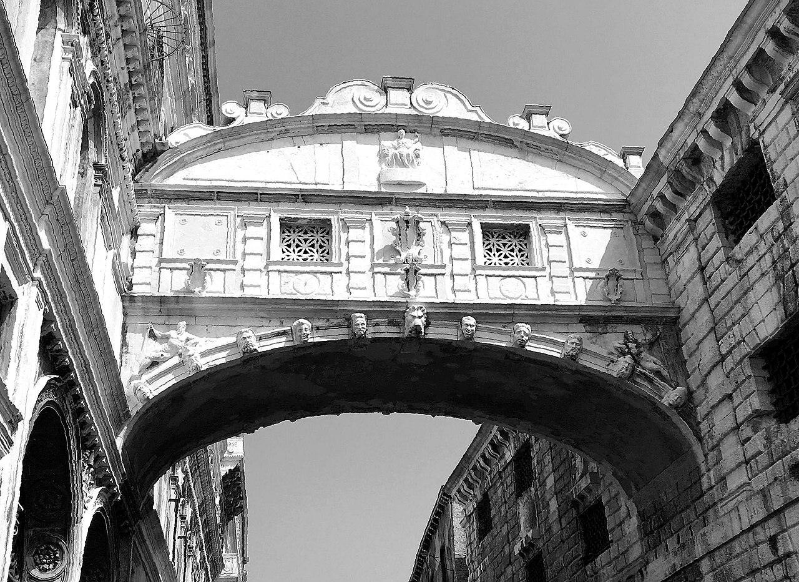
Мост вздохов построен в 1602 году в стиле венетского готического зодчества и соединяет Дворец дожей с тюрьмой Пьомпи. Изначально использовался как короткий путь между комнатами допросов и местами заключения. Согласно легенде, заключённые прощались с прошлой свободой, глядя последний раз на каналы Венеции через этот мост Один из наиболее узнаваемых символов Венеции, ставший частью городской мифологии и привлекающий туристов своей атмосферой и архитектурой.
Адрес: Piazzetta San Marco, facing the lagoon | Стиль: Палладианство и венецианское Возрождение (XVI в.) | Период: поздний XVIII век
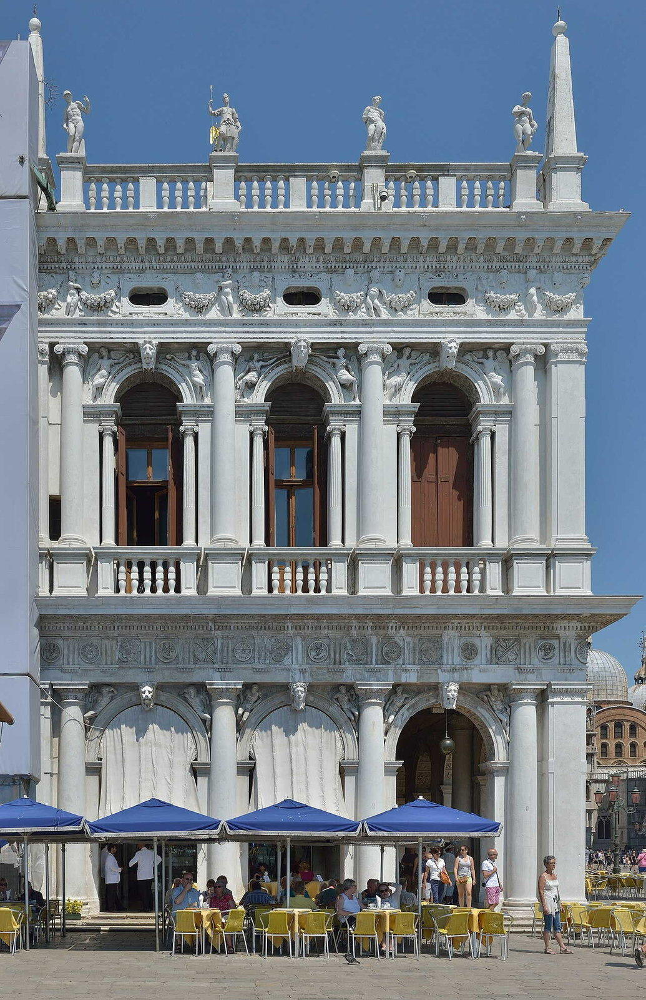
Марчианаская библиотека была основана во второй половине XVIII века и является одной из старейших публичных библиотек Венеции. Библиотека была создана благодаря пожертвованию кардинала Бессариона, который передал в дар республике обширную коллекцию греческих и латинских рукописей и книг. Это место стало символом интеллектуального центра Венецианской республики, демонстрируя её стремление к просвещению и культурному развитию наряду с политической властью Библиотека Марчиана представляет собой значимый памятник культуры и символ Венеции как крупного культурного и интеллектуального центра Европы.
Адрес: Campo del Ghetto Nuovo, Cannaregio | Стиль: Палладианство и венецианское Возрождение (XVI в.)
Синагоги Венеции долгое время были закрыты для широкой публики, доступ предоставлялся лишь по специальным экскурсиям. Музей расположен в историческом районе гетто, где с 1516 года евреи жили обособленно от остального населения города. Со временем район стал символом притеснения и изоляции еврейского сообщества Европы. Сегодня музей помогает переосмыслить историю района и напомнить о важности сохранения культурного наследия Музей является ключевым местом для изучения европейской истории евреев и отражает разнообразие культурной жизни Венеции.
Адрес: Lagoon island north of Venice historic center | Стиль: Палладианство и венецианское Возрождение (XVI в.)
Муранское стекло имеет многовековую историю, начавшуюся ещё в Средние века, когда стеклодувное ремесло было окружено тайной и строго контролировалось государством Венецианской республики. Перенос мастерских на остров Муран был обусловлен необходимостью снизить риск пожаров в городе. Сегодня муранские мастера продолжают использовать старинные техники, такие как кристалло и миллефиори, ставшие визитной карточкой острова Посещение Мурано позволяет увидеть уникальные изделия мастеров, познакомиться с традициями и техниками изготовления стекла, узнать секреты мастерства, которые веками передавались от поколения к поколению.
Адрес: Castello sestiere, eastern edge of the historic city | Стиль: Палладианство и венецианское Возрождение (XVI в.)
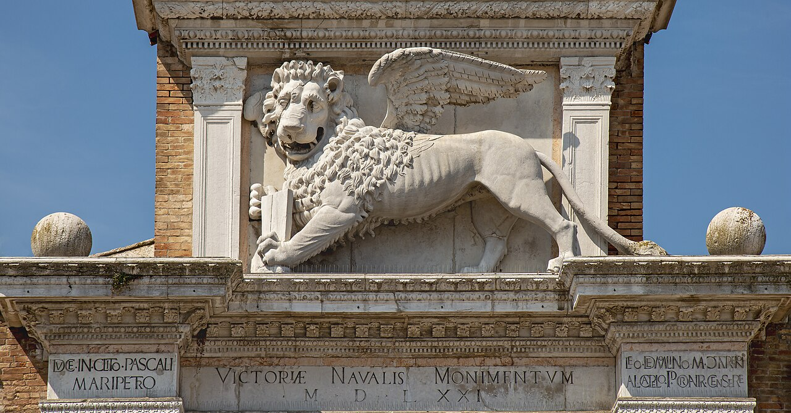
Венецианская Арсенале возникла в конце XIII века и была главным центром кораблестроения Венецианской республики. Здесь создавались военные корабли, поддерживавшие морское могущество государства. Изначально предприятие находилось под государственным контролем и играло ключевую роль в обеспечении военно-морской мощи страны. Со временем доступ к арсеналу был ограничен, и он использовался преимущественно для военных нужд. Среди примечательных фактов стоит отметить использование ранних методов конвейерной сборки, позволявших быстро строить галеры Арсенале является важным историческим памятником, отражающим промышленную мощь Венецианской республики и её роль в морской торговле и военном превосходстве.
Адрес: Isola di San Giorgio Maggiore, opposite Piazza San Marco | Стиль: Палладианство и венецианское Возрождение (XVI в.) | Период: 1609–1617
Сан-Джорджо-Маджоре — островной монастырь и церковь, построенные Андреа Палладио в классическом ренессансном стиле. Расположенный напротив собора Святого Марка, этот архитектурный шедевр стал визуальным противовесом дворцовой Венеции, подчеркивая контраст между монашеской простотой и роскошью дожа. Комплекс монастыря до сих пор функционирует, сохраняя свою первоначальную духовную миссию Церковь Сан-Джорджо-Маджоре является важнейшим примером архитектуры эпохи классического ренессанса в Венеции и обязательным местом посещения для всех ценителей искусства и истории города.
Построенная на месте, где, как считалось, был похоронен Святой Петр, строительство началось при папе Юлии II в 1506 году и продолжалось более века. Базилика сочетает элементы архитектуры Ренессанса и Барокко, демонстрируя художественное великолепие таких мастеров, как Бернини и Микеланджело. Обязательное место для посещения для всех, кто интересуется искусством, архитектурой и католической историей, базилика Святого Петра предлагает захватывающие интерьеры и потрясающие виды с её высокой купольной конструкции.
Адрес: Pincian Hill / north of historic centre | Стиль: Итальянское барокко (XVII в.)
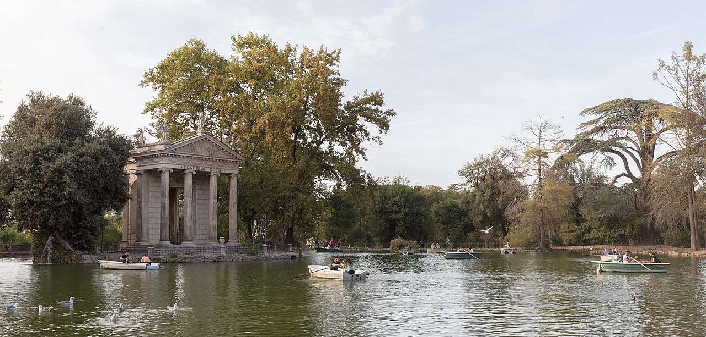
Изначально построенная папой Урбаном VIII Барберини в начале 17 века как частный сад для его семьи, Вилла Боргезе впоследствии стала частью обширных папских владений. Со временем она была расширена и преобразована в общественный парк под патронажем кардинала Сципиона Боргезе, который заказал множество скульптур и фонтанов для украшения её территории. Обязательное место для посещения как любителями искусства, так и энтузиастами природы, Вилла Боргезе демонстрирует шедевры таких художников, как Бернини и Канова.
Адрес: rome | Стиль: Итальянское барокко (XVII в.) | Период: Конец XVII века
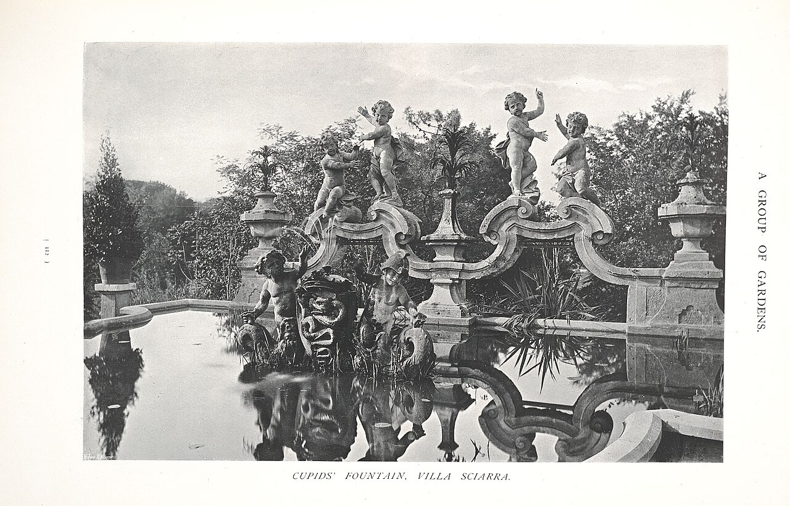
Построенная в конце 17 века для кардинала Пьетро Оттобони, Вилла Шарра с тех пор является выдающимся ориентиром. Архитектура виллы отражает барочный стиль с роскошными интерьерами и изысканными садами. Со временем она превратилась в общественный парк, открытый для посетителей, демонстрируя красивые фонтаны, скульптуры и спокойную атмосферу. Посетители приходят сюда, чтобы насладиться захватывающими видами Рима, отдохнуть среди ухоженных газонов и исследовать историческое значение этого места.
Галерея Боргезе в вилле XVII века хранит шедевры Bernini и Caravaggio. Scipione Borghese поручил виллу Flaminio Ponzio и Giovanni Vasanzio; в залах установлены «Аполлон и Дафна», «Плутон и Прозерпина» и «Давид» Bernini. Часть коллекции ушла в Лувр при Napoleone. Вход по двухчасовым сеансам — бронируйте заранее в сезон.
Построенные в период с 1723 по 1726 год во время правления папы Бенедикта XIII, эти ступени были спроектированы архитектором Франческо де Санктисом, чтобы соединить оживленную площадь внизу с спокойной церковью наверху. Ступени стали известны как место встречи художников, интеллектуалов и туристов, увековеченные в картинах и фильмах на протяжении многих лет. Обязательная к посещению достопримечательность благодаря своей красоте, культурному значению и романтической атмосфере.
Построенная между 1629 и 1677 годами Орденом Братьев Миноритов-Капуцинов, крипта была задумана как напоминание о смертности и преходящей природе жизни. Кости были эксгумированы из различных капуцинских кладбищ и креативно расположены для формирования художественных композиций, включая аллегорические сцены, изображающие этапы жизни и смерти. Посещение Крипты капуцинов предоставляет редкую возможность увидеть один из самых необычных и исторически значимых примеров погребального искусства в Европе.
Построенный в начале 17 века под патронажем кардинала Маффео Барберини, впоследствии папы Урбана VIII, палаццо служил как частной резиденцией, так и культурным центром могущественной семьи Барберини. Его интерьер украшен роскошными декорациями, включая фрески Пьетро да Кортоне и скульптуры Бернини, отражающими роскошь и художественное мастерство той эпохи. Обязательное место для любителей искусства, Палаццо Барберини хранит одну из самых важных коллекций барочной живописи в Риме.
Адрес: Piazza della Minerva | Стиль: Итальянское барокко (XVII в.)
Санта‑Мария‑сопра‑Минерва — единственный готический зал в Риме с богатым барокко внутри. Доминиканский конvent вырос на месте храма Минервы. Капеллы украшали Filippo Lippi, Melozzo da Forlì и другие; внутри стоит «Христос‑носитель» Микеланджelo. Перед фасадом — obelisk на спине слона Bernini. Тихий контраст с соседним Пантеоном и площадью della Minerva.
Фонтан, заказанный папой Климентом XII в 1732 году, был спроектирован Николаем Сальви и позже завершен Джузеппе Никколини. Он состоит из трех уровней с esculturas, символизирующими Изобилие, Здоровье и Общественное благополучие Рима. Знаменитая сцена изображает Океана, бога моря, окруженного тритонами и морскими коньками. Обязательная к посещению достопримечательность благодаря своей захватывающей красоте и культурному значению, Фонтан Треви является магнитом для туристов со всего мира.
Дворец с балконами из кованого железа. Кованые балконы украшают главный фасад. Гражданская архитектура Ното. Гражданская архитектура восстановленного Ното.
Перестроен после землетрясения 1693 года. Фасад из местного известняка образует золотистую перспективу Via Nicolaci. Жемчужина сицилийского барокко. Символ перестройки Вал-ди-Ното после катастрофы 1693 года.
Адрес: Турин | Стиль: Позднее барокко и рококо (XVIII в.) | Период: 1679
Волнистый кирпичный фасад Гварини. Кирпичный волнистый фасад Гварини в Турине. Поздний барокко Северной Италии. Северный поздний барокко переходит в рококо.
Адрес: Турин | Стиль: Позднее барокко и рококо (XVIII в.) | Период: 1721
Фасад Юварра для старинного замка. Барочная лестница Juvarra ведёт в парадные залы бывшей резиденции. Рококо и классицизм на стыке. Сегодня музей в историческом центре Турина.
Адрес: Via dell'Ariento, San Lorenzo (indoor hall) | Стиль: Неоклассицизм (конец XVIII — начало XIX вв.) | Период: 1914
Mercato Centrale — стеклянный рыночный зал 1914 года в квартале San Lorenzo. Giuseppe Martelli спроектировал здание после разрушения старого рынка в Первую мировую. Сталь, стекло и ар‑нуво‑детали создают светлый интерьер с лавками тосканской кухни. Образец гражданской архитектуры между liberty и modernism во Флоренции.
Адрес: Between Via Alfieri and Viale Giacomo Matteotti | Стиль: Неоклассицизм (конец XVIII — начало XIX вв.) | Период: Конец XIX века
Наз番ый в честь итальянского государственного деятеля Массимо д’Азельо, эта площадь первоначально была спроектирована в конце XIX века, чтобы дополнить близлежащий Палаццо Веккьо. Со временем она стала одной из самых знаковых встречней городских жителей, где проводятся фестивали, концерты и ярмарки Гостям стоит приехать сюда, чтобы ощутить подлинную флорентийскую атмосферу и насладиться красивой архитектурой и живым духом города.
Адрес: Viale Fratelli Rosselli 5 (Maggio Musicale complex) | Стиль: Неоклассицизм (конец XVIII — начало XIX вв.) | Период: 1933
Основанный в 1933 году, он изначально был спроектирован архитектором Антоньо Агаццари как место для музыкальных выступлений. Со временем здесь выступали некоторые из самых известных артистов и оркестров Италии, что сделало его культурным центром для флорентийской публики. В 2004 году театр прошел значительную реконструкцию для улучшения акустики и комфорта сидений Посетителям рекомендуется посетить Театро дель Маджо Музикале Фиорентино, чтобы увидеть выступления мирового класса и насладиться уникальной атмосферой одной из старейших музыкальных площадок Европы.
Адрес: Campo San Fantin, San Marco | Стиль: Неоклассицизм (конец XVIII — начало XIX вв.) | Период: 1792
Театр Ла Фениче — один из старейших и известнейших оперных театров Венеции, построенный в неоклассическом стиле в 1792 году. Здание неоднократно горело и восстанавливалось заново, словно символ феникса, возрождающегося из пепла. Последнее крупное восстановление произошло после пожара 1996 года Ла Фениче — одна из самых известных сцен Европы, известная своими роскошными декорациями и великолепной акустикой. Здесь впервые прозвучали многие знаменитые оперы XIX века.
Адрес: Piazza Venezia | Стиль: Неоклассицизм (конец XVIII — начало XIX вв.) | Период: 1885–1911
Построенный в период с 1885 по 1911 год, памятник был заказан королем Виктором Эммануилом II в честь единства Италии после десятилетий фрагментации. Спроектированный Джузеппе Саккони, он включает в себя возвышающийся обелиск, увенчанный бронзовой статуей самого короля, с видом на широкую площадь Венеция. Памятник также содержит Могилу Неизвестного Солдата, увековечивая память тех, кто пожертвовал своей жизнью ради нации. Посещение памятника предоставляет глубокое понимание современной истории Италии и ее трансформации из отдельных государств в единое государство.
Адрес: Милан | Стиль: Романтизм и эклектика (XIX в.) | Период: 1931
Монументальный вокзал в стиле ар-деко. Каменный фасад с скульптурой и стеклянным навесом скрывает огромный зал. Транспортная архитектура XX века. Ворота миланского модерна и символ городской мобильности.
Стеклянная галерея в центре Неаполя. Крестообразный план с куполом перекликается с миланской Галлерией Виктория Эммануэля II. Эклектика объединённой Италии. Железо и стекло как символ неаполитанской модернизации после объединения Италии.
Изначально синагога, затем символ города. Шпиль высотой 167 метров виден из всего Турина. Эклектика и инженерная смелость. Символ инженерной эклектики объединённой Италии.
Адрес: Рим | Стиль: Романтизм и эклектика (XIX в.) | Период: 1885
Отечественный алтарь на Пьяцца Венеция — монументальное здание из белого мрамора, посвящённое первому королю объединённой Италии. Проект Giuseppe Sacconi выиграл конкурс 1885 года; строительство длилось до 1935 года с многочисленными доработками. Комплекс с колоннами, лестницами и конными группами закрывает восточный склон Капитолийского холма. Символ Risorgimento и национального пантеона; с террасы открывается панорама на Римский форум.
15. Стили «Либерти» (итальянский модерн, конец XIX — начало XX вв.)
Адрес: Милан | Стиль: Стили «Либерти» (итальянский модерн, конец XIX — начало XX вв.) | Период: 1935
Рационалистическая вилла Понти. Бассейн и сад интегрированы в строгий объём Понти. Переход от Либерти к модерну. Музей FAI открывает интерьеры для посетителей.
Адрес: Милан | Стиль: Стили «Либерти» (итальянский модерн, конец XIX — начало XX вв.) | Период: 1903
Фасад с майоликовой плиткой. Майоликовые панели покрывают весь фасад. Керамика Либерти. Один из самых ярких домов Милана в стиле Либерти. Керамика Либерти.
Адрес: Рим | Стиль: Архитектура эпохи фашизма и рационализм (1930–1940‑е) | Период: 1942
Дворец итальянской цивилизации в квартале EUR известен как «Квадратный Колизей» благодаря шести рядам арок. Здание спроектировали Giovanni Guerrini, Ernesto Bruno La Padula и Mario Romano; работы завершены в 1942 году для отложенной всемирной выставки. С 2015 года здесь размещается штаб-квартира Fendi. Образец монументального neoclassical rationalism эпохи фашизма и визитная карточка EUR.
Адрес: Рим | Стиль: Архитектура эпохи фашизма и рационализм (1930–1940‑е) | Период: 1939
Консульский дворец входит в ансамбль EUR — выставочного квартала, задуманного в 1930‑е годы. Квартал строился для Всемирной выставки 1942 года; после войны EUR стал деловым и административным районом южного Рима. Консульский дворец принимает конгрессы и выставки рядом с «Квадратным Колизеем». Показывает сочетание классических пропорций и модернистской планировки в итальянском razionalismo.
Адрес: Рим | Стиль: Архитектура эпохи фашизма и рационализм (1930–1940‑е) | Период: 1932
Спортивный комплекс с мозаиками. Мозаики изображают спортивные сцены на стенах. Пропагандистская архитектура. Пропагандистский спортивный комплекс Рима.
Станция Скарпа на острове. Скарпа встроил станцию в венецианский остров. Брутализм в историческом контексте. Брутализм в диалоге с исторической тканью.
Выставочный павильон. Павильон демонстрировал кельтское искусство на Биеннале. Постмодерн на Биеннале. Постмодернистский временный павильон в Гиардини.
Имперские сады Венеции превратились в международный арт-фестиваль, который проходит каждые два года и собирает павильоны разных стран мира. Здесь представлены архитектурные шедевры и произведения современного искусства, демонстрирующие культурное разнообразие и достижения мировой художественной сцены Это место позволяет познакомиться с современными тенденциями мирового искусства и архитектуры в формате масштабной международной выставки.
Адрес: Triangular point between Grand Canal and Giudecca Canal | Стиль: Современная архитектура (2000‑е — н. в.) | Период: 1549
Пунта делла Догана — историческое здание Венеции, построенное в эпоху Ренессанса в 1549 году. Изначально служило таможенным пунктом контроля товаров, поступающих морем в город. Со временем здесь размещались службы карантина и карантинной инспекции. В XX веке здание адаптировали под музей современного искусства, став частью международной арт-сцены Здание является ярким примером интеграции современной архитектуры в исторический контекст Венеции, демонстрируя гармоничное сочетание старинных стен и современных экспозиций.
Адрес: Рим | Стиль: Современная архитектура (2000‑е — н. в.) | Период: 2009
MAXXI — Национальный музей XXI века искусств в Риме, спроектированный Zaha Hadid. Музей открылся в 2010 году на месте бывших казарм Montello. Просторные бетонные ленты, перекрытия и мостики создают «потоковое» пространство для экспозиций и перформансов. Первый в Италии музей, посвящённый только современному искусству и архитектуре.
Адрес: Милан | Стиль: Современная архитектура (2000‑е — н. в.) | Период: 2014
Жилые башни с деревьями на фасадах. Деревья на террасах формируют живой фасад. Деревья на террасах формируют живой фасад. Экологическая архитектура. Боэри и экологическая высотная архитектура.
Адрес: Рим | Стиль: Современная архитектура (2000‑е — н. в.) | Период: 2010
Национальный центр современного искусства в руководстве — культурный комплекс эпохи urban regeneration в Риме. Проект связан с развитием Flaminio и музейной инфраструктурой после MAXXI. Здание Hadid демонстрирует динамичные пересечения пространств и световые шлюзы. Расширяет карту современной архитектуры итальянской столицы.
Адрес: Милан | Стиль: Современная архитектура (2000‑е — н. в.) | Период: 2014
Квартал с башнями Хадид, Либескинда и Араты. Башни Хадид, Либескинда и Араты окружают парк и торговые галереи. Новый деловой центр Милана. Крупнейшая деловая регенерация Милана после Expo 2015.